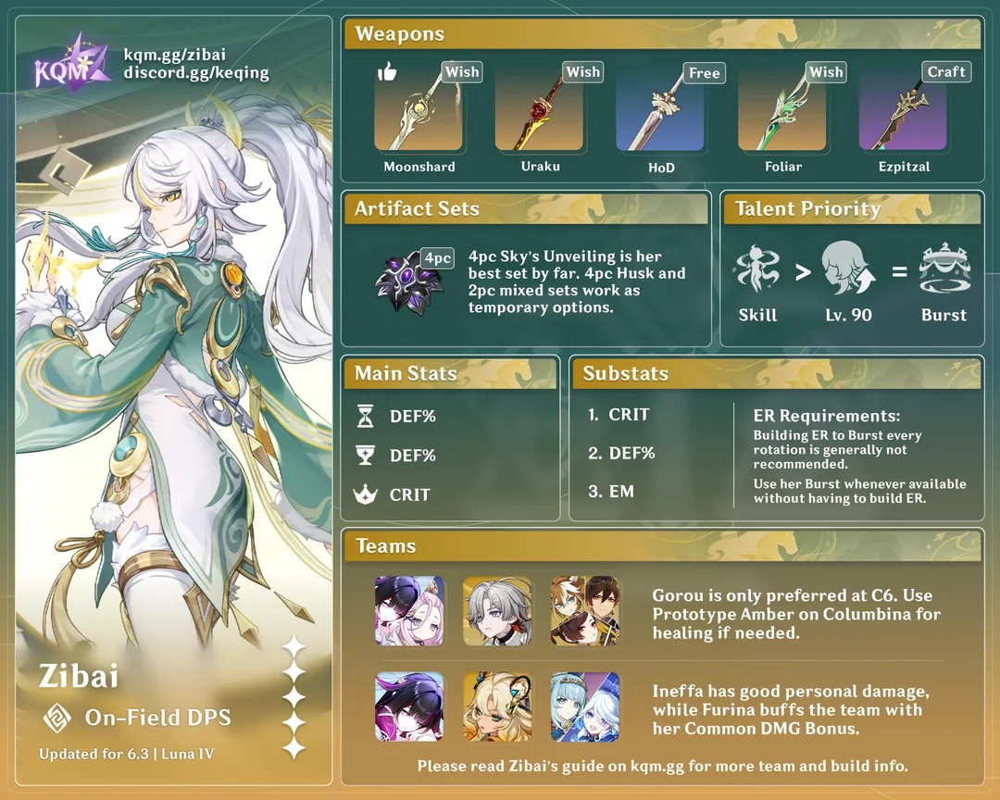
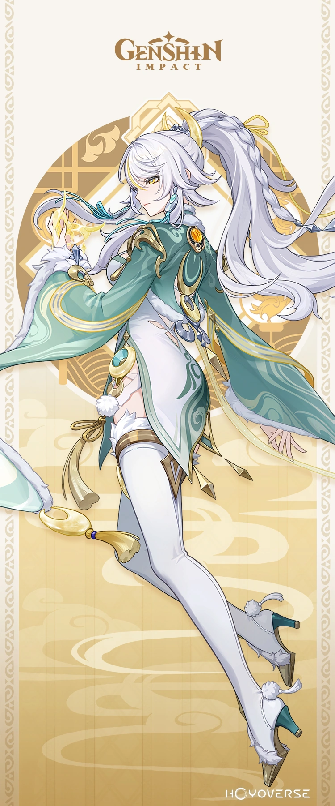

Zibai's Build:

Zibai is a main DPS lunar-crystalize geo character in Genshin Impact. Her set is a little complicated but relies mostly on strategy. If you want the most DMG output from her, you'll have to learn how her skill set works. She only synergizes with lunar-hydro and works best on a team mostly filled with geo. Her ability especially needs geo to fill her skill meter.

Main Affixes
- CRIT DMG
- CRIT RATE
- DEF%
- EM (as needed)
Best Weapons
Finding the right weapon for Zibai can be a challenge, especially if you don't have enough primos to pull for her weapon! Sometimes even past character's weapons can also do the trick. Finding the right affix for the weapon can also be overwhelming, especially trying to figure out what the description of it means. Finding the right weapon is also different for each player depending on what you lack in artifacts. Some people may need more CRIT RATE, CRIT DMG, ATK% or even ER in some cases. Here's a list of her top 4 weapons:
- Lightbearing Moonshard
- Uraku Misugiri
- Light of Folicar incision
- Peak Patrol Song
What Are Some F2P Weapons?
- Flute of Ezpitzal
- Cinnabar Spindle
- Xiphos' Moonlight
More information about Zibai's build and teams can be found below:
Zibai's Build